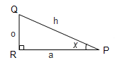
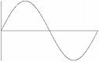

There are six functions that are the core of trigonometry. There are three primary ones that you need to understand completely:
The other three are not used as often and can be derived from the three primary functions. Because they can easily be derived, calculators and spreadsheets do not usually have them.
All six functions have three-letter abbreviations (shown in parentheses above).

Consider the right triangle above. For each angle P or Q, there are six functions, each function is the ratio of two sides of the triangle. The only difference between the six functions is which pair of sides we use.
In the following table
"x" represents the measure of ther angle in either degrees or radians.
| Sine | The three primary functions | |
| Cosine | ||
| Tangent |
In the following table, note how each function is the reciprocal of one of the basic functions sin, cos, tan
| Definition | Reciprocal | |
|---|---|---|
| Cosecant | ||
| Secant | ||
| Cotangent |
For example, in the figure above, the cosine of x is the side adjacent to x (labeled a), over the hypotenuse (labeled h): If a=12cm, and h=24cm, then cos x = 0.5 (12 over 24).
Because the functions are a ratio of two side lengths, they always produce the same result for a given angle, regardless of the size of the triangle.
In the figure above, drag the point C. The triangle will adjust to keep the angle C at 30°. Note how the ratio of the opposite side to the hypotenuse does not change, even though their lengths do. Because of that, the sine of 30° does not vary either. It is always 0.5.
Remember: When you apply a trig function to a given angle, it always produces the same result. For example tan 60° is always 1.732.
For example the inverse function of COS is ARCCOS. While COS tells you the cosine of an angle, ARCCOS tells you what angle has a given cosine. See Inverse trigonometric functions.
On calculators and spreadsheets, the inverse functions are sometimes written acos(x) or cos-1(x).
The six functions can also be defined in a rectangular coordinate system. This allows them to go beyond right triangles, to where the angles can have any measure, even beyond 360°, and can be both positive and negative. For more on this see Trigonometry functions of large and negative angles.

The functions can be graphed, and some, notably the SIN function, produce shapes that frequently occur in nature. For example see the graph of the SIN function, often called a sine wave, above. For more seePure audio tones and radio waves are sine waves in their respective medium.
Each of the functions can be differentiated in calculus. The result is another function that indicates its rate of change (slope) at a particular values of x. These derivative functions are stated in terms of other trig functions. For more on this see Derivatives of trigonometric functions. See also the Calculus Table of Contents.